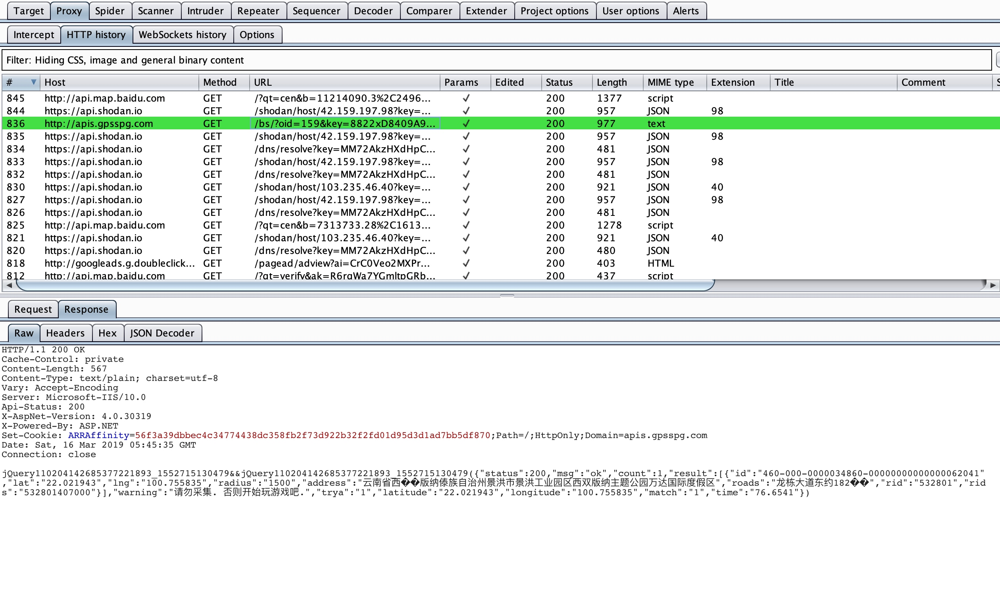

经常在测试网站的时候存在敏感信息泄漏，但是有的时候我们往往容易忽略一些数据包，导致我们与赏金失之交臂。于是我编写了这个插件，可以自动识别地理位置信息、手机号、身份证号，并将数据包使用不同的颜色进行标记。
如果你喜欢就在GitHub点个小星星吧，下载地址：https://github.com/nian-hua/BurpExtender/blob/master/IntelligentAnalysis.py
配置Jython环境
首先去Jython官网下载安装文件
安装过程一直点下一步就好啦，不过要记住这个安装位置：
安装成功后打开Burp的扩展：
选择刚刚记住安装路径下的jython.jar
加载我们刚编写的扩展。
扩展的使用
查看Proxy History：
如果返回的数据包中有身份证信息会被标记成红色
如果返回的数据包中含有手机号信息会被标记成蓝色

如果返回的数据包中含有GPS位置信息会被标记成绿色
在Burp 扩展的output窗口，会详细输出匹配到的敏感信息，方便以后查询。
这个Json Decoder的功能是在GitHub上一个开源功能，但是它并不支持修改解析后的数据，所以我修改了一下之后将它加入到了我的程序里，
后记
如果你觉得还有什么应该标记的话，可以在下方留言哦，如果你有什么建议或意见欢迎访问我的个人博客。
下载地址在：
https://github.com/nian-hua/BurpExtender/blob/master/IntelligentAnalysis.py